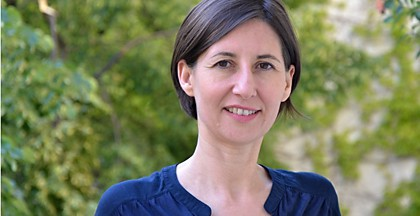

„Die regelmäßige Untersuchung des Auges beim Augenarzt hilft Erkrankungen rechtzeitig zu erkennen und zu behandeln. Ich nehme mir Zeit für eine ausführliche Untersuchung und Beratung.“
Dr. Katharina Krepler ist Oberärztin an der Augenabteilung der Krankenanstalt Rudolfstiftung.
Leiterin der Spezialambulanz für Netzhautchirurgie
Diagnostik und Therapie von Erkrankungen des Glaskörpers und der Netzhaut
Augenchirurgie (Katarakt, Glaskörper und Netzhaut)
Forschungstätigkeit mit Schwerpunkt Erkrankungen des Glaskörpers und der Netzhaut
Regelmäßige Vortragstätigkeit bei Nationalen und Internationalen Ophthalmologischen Kongressen
Regelmäßige Lehrtätigkeit bei Kongressen, Kursen und Wetlabs zur Chirurgischen Ausbildung zum Ophthalmochirurgen.
Vorsitzende der Kommission für Netzhauterkrankungen der Österreichischen Ophthalmologischen Gesellschaft
Stellvertretende Fachgruppenobfrau der Fachgruppe Augenheilkunde und Optometrie der Wiener Ärztekammer
Ausbildung
- Medizinstudium an der Medizinischen Universität Wien
- Facharztausbildung an der Universitätsklinik für Augenheilkunde und Optometrie in Wien.
Seit 2000 Fachärztin für Augenheilkunde und Optometrie - Habilitation im Fach Augenheilkunde und Optometrie an der Medizinischen Universität Wien
Habilitationsthema: „Chirurgie ophthalmologischer Komplikationen von Patienten mit Diabetes mellitus“ - Liste von Publikationen in wissenschaftlichen Fachzeitschriften
- Fortbildungsdiplom der Österreichischen Ärztekammer
- SOE Leadership Development Programme EuLPD
- Medizin und Management Lehrgang des Krankenanstaltenverbunds Wien
- Studium Health Care Management an der WU Wien